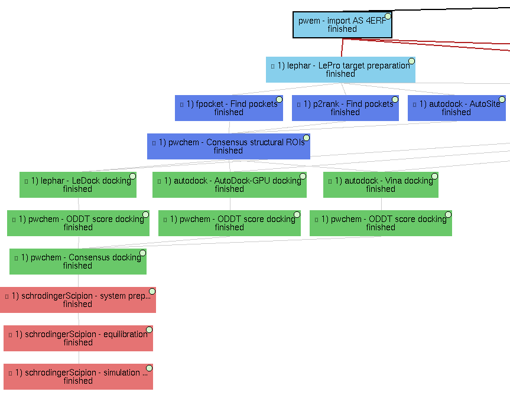
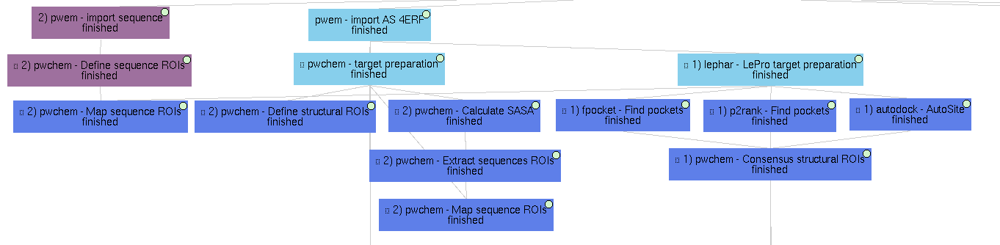
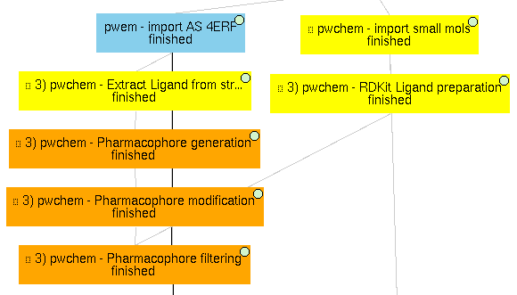
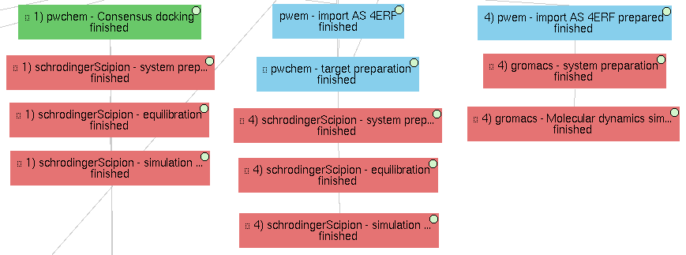

Virtual Drug Screening workflow example (4erf_workflow)
Example shown in “Virtual Drug Screening workflow” section for 4ERF PDB structure, using data from the D-COID database. The example can be divided into 4 subworkflows, which are examples of useful tasks discussed in the paper. The protocols related to each of these subworkflows can be identified by their labels in the GUI, which have the form:
<Subworkflow number> ) <Plugin> - <Task performed>
Images are added in this document to localize the subworkflows, but note that the protocols might appear disordered.
These subworkflows are:
1) Main VDS workflow
Principal workflow that includes protocols following the “Virtual Drug Screening workflow” section:
- Molecules import
Receptor import: 4ERF structure from PDB web, a ligase from Homo Sapiens
Import Small Molecules: 4 ZINC small molecule structures are imported from local “mol2” files (included in this repository).
- Molecules preparation
Prepare Receptor: we used LePro protein preparation (from LePhar) to prepare the receptor, removing the ligand included in the structure and other heteroatoms and extracting only chain A.
OpenBabel Prepare Small Molecules: we used OpenBabel ligand preparation in order to add charges to the imported small molecules and generating up to 2 conformers for each of them.
- Molecules filtering
Regions Of Interest definition: set of protocols that tries to find the most promising regions of the receptor for interacting with the ligand. We did so by, first, independently predicting these receptor pockets with FPocket, P2Rank and AutoSite. Then, the results of each software are combined using the Consensus Structural ROIs as explained in the paper.
Docking
Prepared small molecules are docked onto the consensus ROIs. This task is performed independently using LeDock, AutoDock-GPU and Vina, with default parameters. Then, as explained in the paper, the results of these protocols are rescored using ODDT Vina and RFScore_v3. Finally, the rescored docking poses are combined and the most promising ones are extracted using the consensus protocol.
Molecular dynamics
The best scored docking pose from the consensus docking protocol (ZINC1453, according to the ODDT Vina score) is used as input for the Molecular dynamics simulation example. To do so, we used Desmond, from Schrödinger. We used this commercial software because of the advanced trajectory analysis and the automatic ligand parametrization they provide.
System preparation: the docked molecule (together with the receptor) is surrounded by a water box (with 5A buffer) with the SPC water model. Na+ and Cl- are added to reach 0.15M concentration and neutralizing the system. S-OPLS main force field is used to parametrize the system.
Simulation: the prepared system is simulated in this protocol using Desmond. First, the system is minimized and equilibrated following the default Desmond procedure. Then, a small production simulation is executed, enlarging the trajectory with 24ps of unrestricted simulations.
Production simulation: a second simulation protocol is executed to generate a larger production simulation of 5000ps of unrestricted simulation at native conditions, generating a trajectory that could be analyzed.
2) Structural ROIs definition
This Scipion project also includes several examples on how to determine the structural ROIs discussed in the paper.
-
We show a manual structural ROI definition in the 4ERF-A structure based on the area of its own ligand.
-
Similarly to structural ROIs, Scipion-chem includes several ways to define Regions Of Interest over sequences. In this example, we manually define two sequence ROIs on residues 1-4 and 22-25, which are then mapped to the structure in order to define structural ROIs.
Based on target characteristics
As explained in the paper, another option to define structural ROIs is based on target characteristics. In this example, the SASA (Solvent-Accessible Surface Area) is calculated over the 4ERF-A structure with SASA calculation. From it, the sequence ROIs containing higher values of SASA are extracted and these are mapped to structural ROIs using Extract Sequence ROIs.
Predicted pockets
From the previous subworkflow, we have already shown an example of how structural ROIs can be defined using programs that predict these protein concavities we call pockets.
3) Pharmacophore-based workflow
As described in the paper, Scipion-chem includes some features to perform pharmacophore-based virtual screening. In this project, an example is shown.
To do so, the actual ligand of 4ERF is first extracted using Extract Small Molecules and a pharmacophore is generated from it with protocol Pharmacophore generation. This resulting pharmacophore is slightly modified to be more flexible using another Scipion-chem protocol (Pharmacophore modification), and this modified pharmacophore is finally used as a filter for out set of 4 small molecules with Pharmacophore filtering. In this example, as the pharmacophore features are built using RDKit, we prepared the small molecules using RDKit too (RDKit Prepare Small Molecules). The position of ZINC1099, fitted into the pharmacophore, is shown in the figure of the paper related to this section.
We prepared the molecules using RDKit because, unfortunately, the full interoperability is not yet achieved in Scipion-chem, and this is an example of it. Sometimes, small molecules prepared with OpenBabel would not be parsed properly with RDKit and the protocols would fail.
4) Molecular dynamics (MD)
Finally, this demo project also includes several examples of molecular dynamics simulations.
On a docked molecule
As described in the “Main VDS workflow” section, a molecular dynamics simulation is performed using Desmond over the most promising docked molecule.
On the original complex
The project includes an example the performs a MD simulation on the actual ligand of 4ERF (OR3) together with its receptor. This simulation is again performed on Desmond, since MD simulations with ligands are not yet supported in gromacs or amber (they will hopefully come soon).
Only on the receptor
Finally, a MD simulation is performed on the receptor only, this time using Gromacs. As for the previous cases, a first protocol is used to define the system, with the water box, ions and force fields; and a second protocol actually executes the simulation, which can be visualized using PyMol or VMD (recommended). Moreover, several Gromacs trajectory analysis can be executed from the Scipion GUI in the Analyze results option.
Note that the receptor file used for this subworkflow comes from a local file (4erf_prepared.pdb, included in this repository). This file was obtained using PDBFixer, a software from OpenMM, using scipion-chem-scipionOpenmm, a plugin not yet released. We use this because Gromacs needs a deep preparation of the input receptor in order to run.